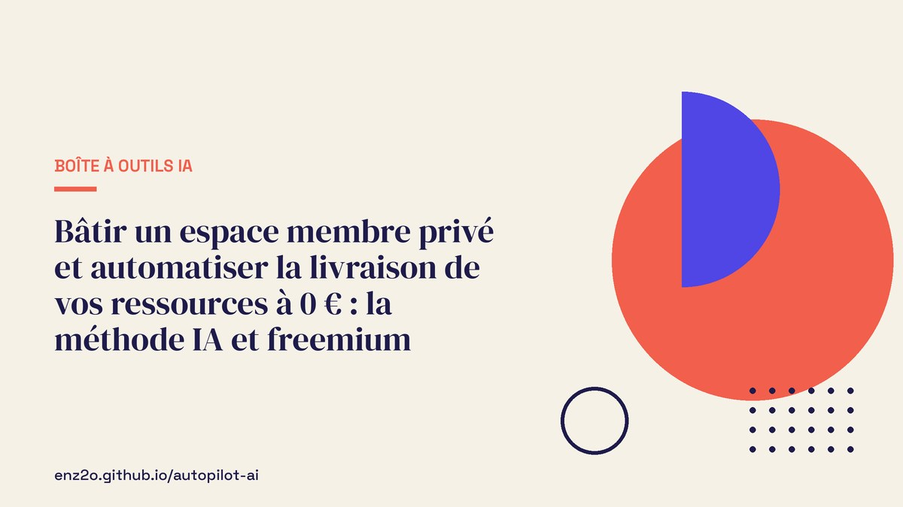

Bâtir un espace membre privé et automatiser la livraison de vos ressources à 0 € : la méthode IA et freemium
2026-11-28
Article contenant des liens affiliés.

Proposer du contenu exclusif, des modèles téléchargeables ou des mini-formations est l'un des meilleurs moyens d'asseoir son expertise et de développer une audience engagée. Cependant, lorsqu'on est freelance, étudiant ou créateur de contenu indépendant, la mise en place technique d'un espace privé ressemble souvent à un parcours du combattant. Entre les plugins payants, les hébergements complexes et la gestion manuelle des accès, la facture financière et temporelle s'alourdit très vite.
Bonne nouvelle : il est aujourd'hui parfaitement possible de concevoir, structurer et automatiser un espace membre complet sans dépenser un seul euro. En combinant la puissance d'analyse de l'intelligence artificielle et l'efficacité des plateformes freemium modernes, vous pouvez bâtir un système fluide qui travaille pour vous 24h/24.
Voici le guide pas à pas pour déployer votre espace membre automatisé à 0 € de budget.
Étape 1 : Structurer l'architecture de votre espace privé grâce à l'IA
Avant de toucher à la moindre plateforme technique, la première erreur consiste à vouloir tout rédiger d'une traite. Un espace membre réussi repose sur une progression logique et claire. L'intelligence artificielle intervient ici comme un ingénieur pédagogique et un architecte de contenu.
Utilisez un agent conversationnel gratuit (comme ChatGPT ou Claude) pour clarifier la structure de vos ressources. L'objectif n'est pas de lui faire tout rédiger à votre place, mais d'obtenir une ossature solide.
Exemple de prompt pour concevoir votre programme :
« Je souhaite créer un espace membre gratuit contenant 4 modules pour aider les freelances à mieux gérer leur prospection. Voici mes idées vrac : [insérer vos notes]. Agis comme un concepteur pédagogique et réorganise ces points en une progression logique avec des titres de modules attrayants, des objectifs d'apprentissage clairs et la liste des ressources à fournir (fiches PDF, modèles, checklists). »
En quelques secondes, vous obtenez un plan structuré avec une hiérarchie précise. Vous n'avez plus qu'à affiner les textes avec votre propre voix et votre expérience de terrain.
Étape 2 : Configurer la plateforme d'hébergement sans frais fixes
Une fois le plan validé, il vous faut un lieu pour accueillir vos membres et centraliser vos contenus. Inutile d'installer WordPress et de jongler avec cinq extensions incompatibles. La méthode la plus efficace consiste à utiliser une plateforme tout-en-un proposant une offre gratuite pérenne.
C'est exactement ce que permet Systeme.io. Dans sa version gratuite sans limite de durée, cet outil vous permet de créer un espace membre complet, d'y héberger vos cours, vos fichiers PDF ou vos vidéos, et de gérer l'accès des utilisateurs.
Les actions concrètes à mener sur la plateforme :
- Créer votre espace membre : Définissez le nom de votre portail et personnalisez les couleurs pour correspondre à votre identité visuelle.
- Ajouter vos modules et chapitres : Reprenez la structure élaborée avec l'IA à l'étape 1. Chaque chapitre peut contenir du texte, des vidéos intégrées et des liens de téléchargement.
- Définir la logique d'accès : Vous pouvez choisir d'ouvrir l'ensemble du contenu immédiatement ou d'adopter un déblocage progressif (goutte-à-goutte) au fil des jours.
L'avantage d'utiliser un outil intégré comme Systeme.io est que la gestion des accès est directement reliée à vos formulaires de capture d'emails, ce qui supprime le besoin de passer par des outils d'automatisation tiers payants.
Étape 3 : Rédiger et automatiser la séquence d'accueil
La valeur d'un espace privé ne réside pas uniquement dans le contenu hébergé, mais dans l'expérience utilisateur globale. Lorsqu'un membre s'inscrit, il doit recevoir instantanément ses identifiants et un message de bienvenue engageant.
Pour rédiger cette séquence de communication sans y passer vos soirées, faites appel à l'IA pour générer vos premiers brouillons de courriels.
Le protocole d'automatisation des messages :
- Email 1 (Instantané) : Message de confirmation avec le lien d'accès direct et un mot d'encouragement.
- Email 2 (J+2) : Un message de suivi demandant au membre s'il a réussi à se connecter et lui indiquant la ressource la plus importante par laquelle commencer.
- Email 3 (J+5) : Un appel à l'action pour recueillir ses premiers retours ou l'inviter à rejoindre vos réseaux sociaux.
Vous pouvez demander à l'IA de rédiger ces emails en lui spécifiant le ton souhaité (chaleureux, professionnel, direct). Une fois les textes ajustés, intégrez-les directement dans les règles d'automatisation de votre outil freemium. Désormais, chaque nouvel inscrit sera pris en charge automatiquement.
Étape 4 : Aménager un environnement de travail ergonomique pour créer sereinement
Construire des ressources pédagogiques, enregistrer des explications ou mettre en forme des documents demande de la régularité et une excellente concentration. La qualité de votre travail dépend en grande partie du confort dans lequel vous l'exécutez.
Travailler pendant des heures courbé sur un écran de portable finit par provoquer des tensions cervicales et une fatigue inutile. Pour maintenir une posture saine durant vos sessions de création de contenu, investir dans un support ordinateur portable pliable est une solution simple et très accessible. En surélevant votre écran à hauteur des yeux, vous préservez votre énergie pour les tâches à forte valeur ajoutée.
De la même façon, veillez à garder un éclairage adapté pour éviter la fatigue visuelle lors des sessions de rédaction nocturnes. Une lampe de bureau LED reglable permet d'ajuster l'intensité lumineuse et de maintenir un espace de travail propice à la clarté mentale.
Étape 5 : Entretenir l'espace et collecter des feedbacks automatisés
Un espace membre n'est pas un projet figé. Pour qu'il conserve son intérêt et continue de faire grandir votre audience, vous devez l'alimenter en fonction des besoins réels de vos utilisateurs.
Pour éviter de passer des heures à analyser des questionnaires manuscrits, utilisez l'IA pour traiter les retours d'expérience : 1. Intégrez un court formulaire Typeform ou Google Forms à la fin de votre espace membre. 2. Copiez-collez les réponses reçues dans votre outil d'IA avec la consigne suivante : « Voici les retours de mes utilisateurs. Synthétise les 3 points forts principaux et isole les 3 difficultés majeures qu'ils rencontrent encore. » 3. Utilisez ces enseignements pour ajouter un nouveau chapitre ou corriger une explication confuse.
En appliquant cette boucle d'amélioration continue, votre espace privé gagne en valeur sans que vous ayez besoin de réinventer la roue à chaque mise à jour.
Bilan : un actif numérique durable et zéro euro dépensé
En combinant l'intelligence artificielle pour la conception pédagogique et la rédaction, et un outil tout-en-un comme Systeme.io pour l'hébergement et l'automatisation, vous venez de créer un véritable actif numérique.
Ce système vous permet de : - Valoriser votre expertise de manière professionnelle. - Capturer des prospects qualifiés en continu. - Offrir une expérience fluide à vos membres sans consacrer une seule minute à la distribution manuelle des accès.
Le tout a été mis en place sans débourser le moindre centime en abonnements logiciels. Il ne vous reste plus qu'à partager le lien de votre espace membre et à laisser la magie de l'automatisation opérer.